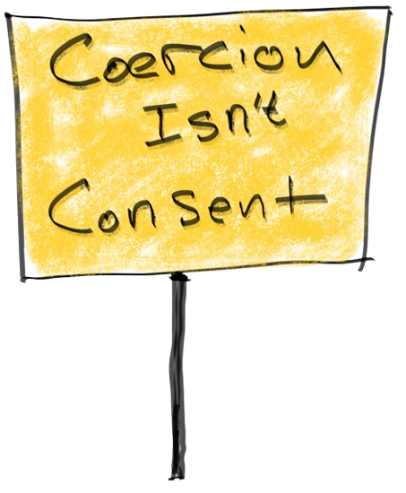
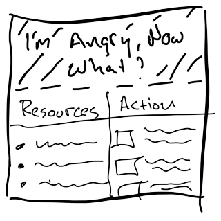

Dark Consent: Portfolio

Where am I and what is this?
This project is a prototype of a site that would provide a collection of useful interactive tools and resources for understanding the complex systems contributing to the sea-change in our relationship with technology and those that control it. This project seeks to help illuminate the problematic interactions that many people encounter when using technology today as well as some of the deceptive tactics employed in interfaces. Additionally this site would aim to put these practices into a broader context of sociotechnological issues.
The world is becoming ever more polarised and human rights, consumer rights and privacy are under attack from all angles often through the very technology we use. Technology is supposed to be a tool to help us but why now is it instead often being used against us?
Our privacy is often being compromised in the ruse of convenience, safety or personalisation. Design patterns that were supposed to help designers create intuitive and enjoyable experiences are being leveraged to coerce, manipulate and addict users instead. We hope to demonstrate how a feminist design approach would greatly improve our relationship with technology.
Overview
. . .
Dark Patterns


- Define Dark Patterns
- Interactive Examples
- Real World Examples(links)
- Random Dark Pattern Example
- Quizzes
Exploring Dark Patterns
Visitors will be able to learn about dark patterns through descriptions, interactive examples and links to real world examples. It will also be possible to generate a random dark pattern example to explore
. . .
Call To Action
 Users that feel inspired to take action will find different organizations, movements and communities they can get involved with.
. . .
Glossary
There is a lot of terminology and jargon that is important to understand for those wanting to dig deeper into the topics of technology, design and UX. Keywords will link to the glossary so visitors can quickly learn any terms they do not understand
. . .
Interactivity
Interactivity is a key to learning and encouraging people to engage with important topics. In addition to text, video and audio content interactive applets will allow visitors to explore these ideas in different ways.
Reflections
The field of Human Computer Interaction (HCI) and more specifically User Experience (UX) involves understanding how technology and design fit into the human experience. In part it can involve practical choices like how an interface layout should be structured to make it intuitive to use. UX can also be more reflective about the broader context in which a technology plays a role in our daily lives on an individual or societal level.
Dark patterns, deceptive patterns or anti-patterns are systems that use trickery, manipulation or coercion to force a user to take an action they did not intend often by making the design inconsistent, unintuitive or confusing in subtle ways in order to maximise the likelihood the user will do what benefits the entity employing these techniques.
TLDR: Make it difficult for the user to do anything that does not profit the company or service.
Example: making signing up to a service very simple but cancelling the service nearly impossible.
Traditionally dark patterns refer to interface design but more broadly they tie into a battle of control where companies are no longer only interested in customer’s money but also their privacy, legal rights, access to facts and agency. Companies have taken a far more antagonistic position toward customers and these patterns are not only in software and hardware interfaces but in business models, policy and politics.
Dark patterns represent a weaponization of uncertainty, pervert the intention of design principals and are inherently anti-feminist.